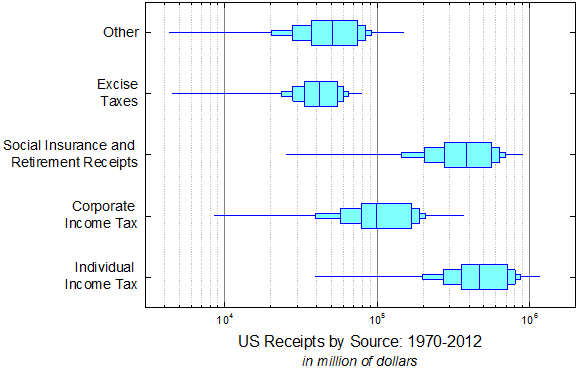

ボックスチャートの重ねあわせ
Box-Overlap
サマリー
全てのOriginグラフはグラフテンプレートから作図されます。テンプレートは、以前の編集を呼び出しますが、新たな編集の開始点としても使用できます。このチュートリアルは、以下のような高度な編集を行ったボックスチャートを作成する方法を示しています。
- 
必要なOriginのバージョン: 2016 SR0以降
学習する項目
- ボックスチャートを編集する
- ボックスチャートの軸を編集する
- グラフの統合とリンク付け
- XとY軸の交換
ステップ
このチュートリアルは、チュートリアルデータプロジェクト（<Origin EXE フォルダ>\Samples\TutorialData.opj）と関連しています。
最初のボックスチャートを作図
- チュートリアルデータプロジェクトを開き、Overlapped Box Chart フォルダにブラウズします。
- Book1BのSheet1をアクティブにします。B列からF列を選択して、作図：統計：ボックスを選択します。ボックスチャートが作成されます。
- 凡例はクリックして選択し、Deleteキーを押して削除します。
- ボックスをダブルクリックして、作図の詳細ダイアログを開きます。グラフグループタブを開き、境界色の推移をなしにセットします(他の要素は元からなしが設定されているはずです)。
- パターンタブを開き、下図のように設定します。
- 間隔タブをクリックし、ボックス間の間隔(%)を40にします。

- ボックスチャートタブを開き、下図のように設定します。
- パーセンタイルタブを開き、すべてのシンボルを削除します。OK をクリックしてダイアログを閉じます。
重ねるボックスチャートを作図
- グラフウィンドウのタイトルバーを右クリックし、ウィンドウの複製を選択します。これを2回繰り返します。これで、4つのグラフウィンドウができます。
- Graph2のボックス上でダブルクリックして作図の詳細ダイアログを開きます。ボックスチャートタブを開き、係数を0.95、ボックス幅を15、ヒゲなしに設定します。
- Graph3に対してステップ2を繰り返し、係数を0.75、ボックス幅を40、ヒゲなしに設定します。
- Graph4に対してステップ2を繰り返し、係数を0.5、ボックス幅を70、ヒゲなしに設定します。
- グラフ操作メニューのグラフウィンドウの統合を選択して、merge_graph ダイアログを開きます。以下の設定し、OKをクリックします。
- メニューからグラフ操作：レイヤ管理を選択し、ダイアログボックスを開きます。
- Layer2を選択し、リンクタブを開きます。以下の設定し、適用をクリックします。
- 軸タブで全てのチェックを外し、適用をクリックします。
- layer3 と Layer4に対してステップ7～8を繰り返します。OK をクリックして、ダイアログを閉じます。

詳細な編集
- Y軸をダブルクリックして、軸ダイアログボックスを開きます。スケールタブを開き、垂直アイコンが選択されていることを確認して下図のように設定します。
- 目盛ラベルタブを開き、下図のように設定します。
- グリッド線タブを開き、下図のように設定します。
- 軸と軸目盛タブを開き、Ctrlキーを押しながら下と左のアイコンをクリックして選択します。下と上で同じオプションを使用するにチェックを付けてから軸と軸目盛の設定を以下のようにします。
- 目盛ラベルタブに戻ります。X軸(下アイコン)に以下のような設定を行い、全て完了したらOKをクリックして軸ダイアログを閉じて設定を適用します。

- Y 軸タイトルで右クリックし、オブジェクト表示属性を選択します。以下の設定し、OKをクリックします。
- グラフウィンドウの左上角にある目的のレイヤ1アイコンをクリックして、レイヤ1をアクティブにします。グラフ操作：X軸とY軸の交換を選択します。
- 必要に応じてグラフレイヤのサイズや位置を変更し、グラフウィンドウ内にすべての要素が入るようにします。